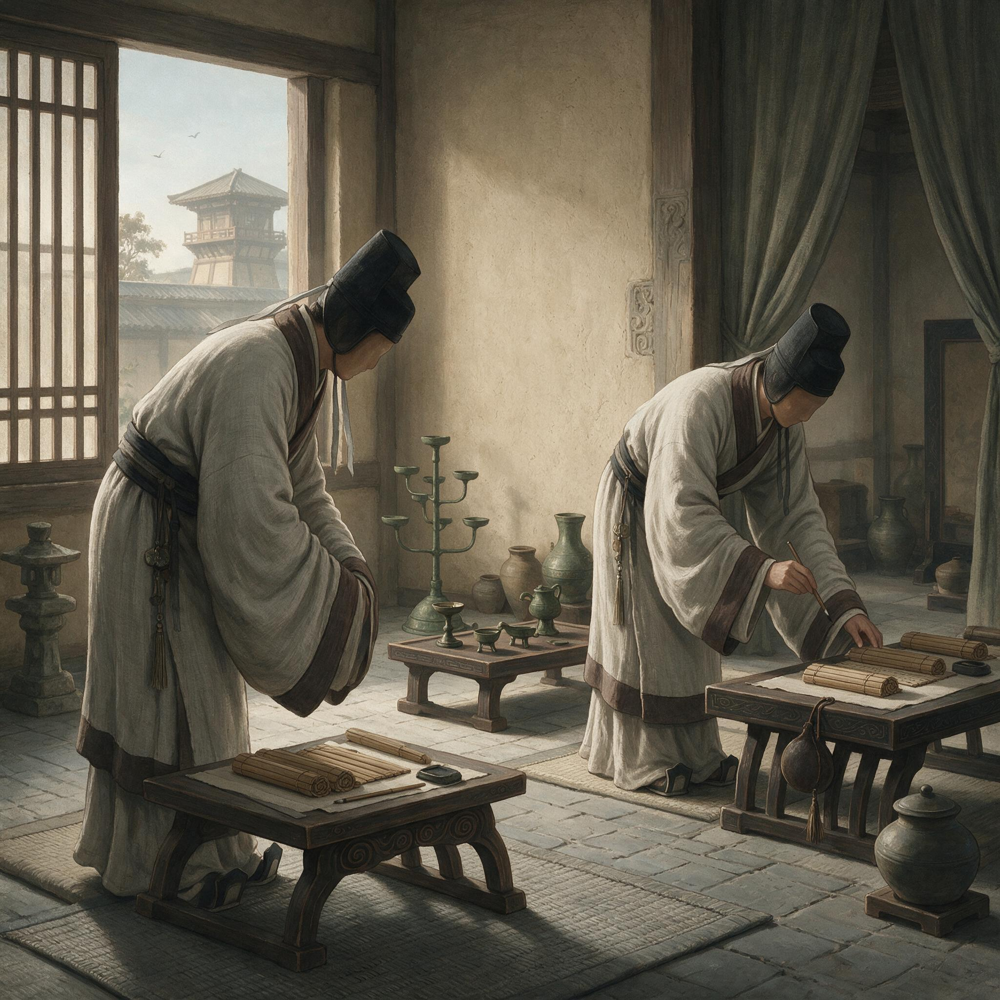

第 2 章
蚕室之后
他记得离开耒阳那天的路，比从村口走到铁官作坊的任何一条路都长。母亲没有出来送，灶房的门紧闭着，烟囱里的烟早早就熄了。父亲走在前面，背着一个布包，里面叠着换洗衣裳和一双新纳的鞋底。鞋底的针脚密得出奇，不像走着去县城，倒像要穿着它踩过炭火。两人一前一后踏过霜白的田埂，经过铁官作坊外墙时，父亲没有回头，步子也没有慢，只把布包换到另一侧肩上。
蔡伦在后面跟着，听见墙内传来锻锤声，一下一下，落在沉默的清晨里，像从地底下长出来的脉搏。他没有数，因为头天夜里已经数了半宿：父亲在院子里踱步的脚步声数了六百下，姐姐在阁楼上压着嗓子哭的次数数了十一回，数得自己的呼吸都变得又薄又疼。到了县寺，差役接过文书，把父亲挡在阶下。父亲垂手站着，嘴唇动了动，像要说什么税赋、年景、盘缠，终究没有说。
后来蔡伦跟着差役往里走，走到门洞的阴影里再回头，父亲仍站在原地，影子在地上拉得极细、极薄，像被抽去了骨架。那个影子没有追上来，也没有喊他。他当时只有十二岁，只觉得冷。很多年后他才在

汉代宦官服饰
AI 生成插图，非史实影像。
记忆里确认，父亲背对铁官作坊时为什么肩膀发抖：是怕听见那锤声，还是怕从今往后家里只剩寂静。他当时无法分辨。
入宫前的准备在桂阳郡治的一处偏院里进行。那不是蚕室，只是复检身体、登记名册、换发衣履、讲明禁律的地方。一个掌事的老吏拿着木牍逐项问他：籍贯、父名、年龄、身上有无旧疾。问到父名，他答了，老吏用刀笔在牍上轻轻刮去一竖，像把某个偏旁从姓氏里剥下来。旁边一个年轻宦官在磨墨，头也不抬，磨得很慢，墨汁在砚池里打旋，黑得发亮。蔡伦看着那圈墨，忽然觉得官宦写作“宦”字，上面是宀，下面是臣，人在屋下，屈身为奴。那磨墨的人并不看他，只轻声说：“入了这个门，会写自己的名就行，别的少想。”
复检身体那日，他被带进一间空屋，屋里炭火暖得闷人。掌事宦官让他脱尽衣裳，前后转了三圈，看他的肩、背、腿、脚，又抬起两手，凑近烛火细看。那宦官捏着他的指节，一踮一放，说：“手上茧子不少，在家做过活？”他说打过铁。宦官哦了一声，没再问，只在他名录上记了一笔。后来他才知道，那一笔不是记他的手艺，是记他“体实耐痛”。四个字轻得没有斤两，却决定了他被排在蚕室第几批，也决定了掌刀匠在切开他之前需要准备多少药、多少布、多少草灰。
真正入宫是在永平年末的一个薄晴日子。一行人从郡治出发，走了许多天，沿途常见冻死在路边的流民，也常见高车大马卷起黄尘往北边去。越往北，地势越平，风越利。他从未见过洛阳的城墙。当那一道灰扑扑的垣墙从天地接缝处缓缓升起时，他以为自己看见了山。走近才发现那不是山，是一层层土筑的墙体，高得叫人望不见顶，墙外光秃秃的柳枝在风里抽着，像无数只空手。
入宫那条路比从郡治到洛阳更窄。他们从一处偏门进去，门洞幽深，墙砖沁着凉意，走在其中的人都不说话，只有衣袂和鞋底的细响。队伍经过三道门，每过一道，便有宦官上来点数，低声报出人数，然后退至一旁。蔡伦数着门：第一道门外有卖纸鸢的摊贩，第二道门内有一株老槐，第三道门后只剩高墙、长巷和扫地的人。扫地的人弓着身，扬起的细尘在斜照的阳光里浮着，像无数废弃的字迹。
蚕室在宫城西北边，靠着一口井和几排矮屋。此处地僻，静得连井绳摇晃都成了一种响动。蔡伦被带进去时，看见院门上方没有匾，只有一块被风雨蚀成灰白的木头。门内站着两个宦者，端着铜盆，盆中盛着煮过的药水。药味极重，苦得发腥，呛进鼻腔后久久不散。他被领至西厢最里间，那间屋狭长，四壁灰白，只有北墙高处开着一方小窗，窗上糊着厚纸，透进来的光浑浊得像隔了水。
屋里没有床，只铺着一层厚草荐，草荐上盖着麻布。掌刀匠是个矮壮的中年人，穿一件旧皂袍，袖口卷到肘上，露着两条粗黑的小臂。他先让蔡伦跪在草荐上，又命他解开衣带，褪至膝弯，而后问：“在家可祭过神？”
答祭过。又问：“可也拜过炉神？”答拜过。掌刀匠便不再说，转身从一只黑木匣里取出刀具。刀只有三寸来长，刃极薄，在昏光里闪出鱼肚白似的光亮。蔡伦想起铁官作坊里最难打的一种刀，叫割弦刀，刃口要薄，却不能脆，淬火时手一抖整块铁就报废。他盯着那刀刃，恍然觉得它和自己之间隔了一层水，水在晃动，刀也在晃。
落下来的时候，他没有听见声音。那一刀轻极了，轻得像一笔削去竹简上写错的字。疼痛是片刻之后才从身体里涨起来的，像炉膛打开的一瞬间，火舌先缩进去，再轰然腾起。
他咬住嘴唇，没有喊。掌刀匠手法很快，敷药、裹布、压草灰、束带，几个动作连成一片，像铁匠收尾时对刀背的一次快速回火。蔡伦被抬到旁边一间的蚕室里去。
所谓蚕室，是一间四面无窗的土屋，屋顶铺着茅草，墙面糊着掺了草茎的泥浆，密不透风，只靠南墙下一个小洞通气。空气又潮又暖，暖得让人作呕。两个宦者把他放在草荐上，头高脚低，嘱咐他不可翻身，不可大声，不可乱动，否则创口迸裂，神仙也救不回来。然后他们关上门，屋里黑下来，黑得像一炉封了火的炭，外面的声音一丝也透不进来。
他在蚕室里躺了三天。每日有人入内换药、喂水、倒溺。换药时，那人把蒙在创口处的药布掀起，蔡伦不敢低头看，只斜眼望见宦者指尖沾着血水，在水盆里荡了荡，泛起一缕淡红，像铁渣淬进水里散开的颜色。
那三天里，他想了很多。先是想家，想母亲的针脚，父亲的背影，作坊里的淬火池，水面上浮着的灰沫。后来想铁，想捶打，想矿石在炉火里由黑转红、再由红转白的过程。最后他什么都不想了，只在脑子里反复念着一句话，像数珠子：“切断了，便回不去了。”
那几日他发过一回热，嘴唇皲裂，恍恍惚惚中看见祖父站在淬火池边，把一块烧红的铁夹起来往水里一按，白汽腾起，遮住祖父一半的脸。他想喊祖父别把铁淬太急，会裂。可喉咙里干得冒火，喊不出声。祖父也没看他，只盯着那块铁，等白汽散去，啐了一口：“太脆了，重来。”那话像锤子一样砸进他晕沉沉的脑子里。
第四日，他被人扶出蚕室。院中天光大亮，他睁不开眼，指节酥软无力。一个老宦官领他往住处走，走得极慢，竹杖笃笃点着地。蔡伦盯着那根青黄色包铜竹杖，一下一下，像往地里钉钉子。
他想起从耒阳到洛阳这一路，自己到底走了多少步。他没有数。他后悔没数。
数步于是成了他在宫中学到的第一个自我保全的法子。不论去何处、办何事，他都默数步数。从居所到织室三百六十二步，从织室到染坊二百一十七步，从染坊到尚方东院五百四十步，从尚方东院到西院六十一步。步数不是路线，是坐标，是他在这个被切成无数碎片的宫城里，为自己悄悄铺下的一张暗图。有了这张图，他便能在一个没有姓、没有家、没有来处的新世界里，重新找到自己的位置。
宫中最初的生活并不给人数太多的时间。每日天未亮，各房宦官便须起身，漱口净面整衣，再到院中听候点视。点视者是一个掌班老宦官，面长眼细，手里捏着名册，念一个名，便有一个少年应声上前。蔡伦被念到时，下意识要报“蔡”，出口前猛地咬住，只应了一个“在”。掌班撩起眼皮看他一眼，不置可否。从此谁也没有再叫过他的姓，他叫什么，便是什么，像一件被放进库中的小器物，只认编号，不认来路。
起初那段日子，他常梦见铁，梦见自己蹲在锻炉前，炉火映在脸上，祖父把烧红的铁搁在砧上，一锤下去，火星四溅。祖父教他：锻铁时先看料，再认火候，后听声音。好铁受重锤时声音沉而不暗，脆铁受轻锤时声音尖而不实。于是在梦里他总竖起耳朵去听，可每次听见的都不是锤声，而是蚕室门外那口井绞绳的吱呀声，一下一下，像有什么东西被慢慢提上来，又慢慢放下去。醒过来，他浑身是汗，手心冰凉。
他知道自己再也回不到炉火边了。那个站在砧前的少年已经死了，可又死得不彻底，因为记忆还活在骨节和肌肉里，只在夜半从指尖往外冒。十根手指都在，关节灵活，能握紧一柄锤子，也能夹住一根铁钳。可宫里不许他再碰铁锤，不是明令禁止，是铁匠活计根本不在宦官执事之列。
宫中器物制作皆归尚方，尚方的冶铜、错金、铸造各作坊都设在宫城之外，由大批工师、刑徒与工匠操持。宫内宦官作坊只做细活：织、染、漆、玉、金银错、象牙刻、缣帛画。于是那双手先被安排去织造。
织室在宫城西侧，一长排殿房，里面架着几十张织机。蔡伦初上织机时，脚下松紧一乱，手上就出了差错。梭子常在半空脱手，铜梭头砸在机框上，发出“当”的一声，在织室里格外刺耳。邻机的老宦官抬头看他，目光里没什么恶意，也没什么宽和，只瞧一眼，又低头继续活计。那种目光蔡伦后来才明白：宫里的人不会轻易把情绪递出去，多看一眼已是极大的注意，多问一句便可能落人口实。沉默不是不会说，是知道说错了要命。
他慢慢学会织一种素色细布，叫“绵”，幅宽一尺一分，经线要密，纬线要紧，正适合裁制中衣和束带。他指尖的厚茧渐渐脱落，换上织造磨出的薄茧。细麻线割手，冬天冷风从殿门灌进来，手背浸在汗里，又经凉风一吹，不久便裂出细口。
郭监是个年过四十的宦官，管着东排十二张机。蔡伦手上裂口渗血那几日，郭监没多说，只把他唤到机台边，从木箱里取出一小罐黑乎乎的膏药，用指尖给他推开。膏药温热，渗进裂口像细小的针刺。蔡伦咬着后槽牙，没出声。
郭监说：“裂口不治，血渗了布，一匹就得重织。”他说“重织”两个字时，眼睛看着蔡伦，像在说另一件不相干的事。蔡伦点点头。后来他每天都涂那黑膏，裂口再没渗过血，但也从未好利索，只是被膏药封住了，像给伤口糊了一层壳。
三个月后，蔡伦已能织中品的活计，布面平整，纬线直，收边不毛。郭监有一次验布，把布举到光下，前后照了照，只说了一句：“手上有底子。”蔡伦没接话。他知道这话在宫里传出去没有用处。织室内外的人只认一个人是否可作心腹，不认一个人是否可作工师。但当时他还不太懂，作心腹和作工师是两条完全不同的路。
离开织室后，他被派往染坊。染坊在织室后头，院内几口大陶缸排成两行，茜草染绛，靛蓝染青，栀子染黄，皂斗染黑。蔡伦被分去管靛蓝池。
每日清晨，他跟着一个姓韦的宦官去翻搅蓝草汁。发酵后，水面浮出一层青绿色泡沫，要用木耙打散，再将碱水搅进去。碱气刺眼，搅上一阵，眼泪就往外冒。他用力眨眼，眼前一片模糊，只听见木耙在缸底刮出的闷响，像极了淬火时铁料入水后水底翻上来的咕嘟声。
韦宦官说：“染布先看天气，晴则色沉，阴则色浮，入布时机差半刻，整批颜色都废。”蔡伦问怎么判断时机。韦宦官把手伸进染汁，又拿出来放在鼻下闻了闻，用舌尖飞快地在指尖上一碰，说：“闻它，像熟透的菱角；尝它，像咸得发苦的井水。”蔡伦照做，舌尖麻了半日，却也记住了那味道。
那一年，他才知道颜色也有火候。蓝草发酵不足，染出的青便浮，水洗三道就褪；发酵太过，色虽深却死，丝线也脆。恰好的靛，染出的青会往布纹深处钻，晒干后像从布里长出来的。
这种对时机的判断，是从铁官作坊里带出来的东西换了件外衣重新出现。打铁看火色，染布看汁味；淬火论水质，调靛论天气。本质都是一样：在某个过程里，有一个不可重复的瞬间正在成形，早了僵，晚了毁。工具会换，炉子在耒阳，织机在宫中，染缸在青石阶下，可节奏在人身体里。
染坊之后，他被抽到尚方听用。尚方在宫中不是一个坊，而是一整个机构，掌管供御器物，有东、西两院。东院管漆木金玉，西院管五兵车马。
蔡伦第一次进尚方东院时，廊下排着三架长案，上面放着未完工的漆奁、玉璧、错金铜釦，地上散着木屑、玉粉、铜末和折断的竹篾。一个匠人坐在小杌上，用细笔往漆面上描云气，描到一半手一抖，漆笔偏出半寸，他立刻搁下笔，抓起布巾把整块漆面擦去，嘴里不骂，只从喉咙里挤出一声极低的叹。蔡伦看那老匠人从早到晚描了六遍，仍不中意，最后把半干的漆刮尽，重新上灰。
他忽然明白宫中的“精”是什么。精不是天分高，是时间多，是宫里有足够多的材料与人工，允许一个人把东西磨掉重做，直到那东西自己露出近乎无聊的完美。
尚方东院后来成了蔡伦待得最久的地方。他初去时只打杂，搬漆架、筛木炭、研朱砂、煮胶。有一回，他替做漆器的老宦官煮鱼鳔胶。
老宦官说：“胶起小泡时下料，起大泡时离火。”蔡伦问小泡与大泡差几成。老宦官伸手翻掌：“手指头点一下，不粘手是小泡，粘手是大泡。”蔡伦便用手指去探胶汤。滚热的胶汤粘在指尖上，燎起一个亮晶晶的水泡。他甩了甩手，没作声。老宦官瞧他一眼，哼了一声：“倒是个舍得下手的。”
此后便不再只让他煮胶，也教他调漆、上灰、磨退光。蔡伦学得很快，不是比别人灵巧，是这些活计里全是火候、配比与压力。漆要薄，灰要细，打磨要从粗到细，每换一种石粉，手感就轻一分，直到最后用极细的瓦灰把漆面推出幽光。那光不是漆面发出来的，是手和石粉一遍一遍磨出来的。它需要一个人在最后关头不用力，把力卸掉。这恰恰是淬火的反面，却又来自同一种理解：材料走到临界点后，改变它性状的已不再是猛力，而是分寸。
在尚方东院第三年，蔡伦领到一件极平常的差事：清理库房旧档。那库房靠北，梁上积灰，地上堆着成捆的旧简、断簪、锈铜扣、发霉皮革和几捆说不清用途的丝絮。蔡伦在角落里翻出一只竹筐，筐里盛着几团灰白色的东西，轻得像干透的虫蜕，捏一摸就簌簌掉渣。旁边一个老宦官说，那是浣衣房洗缣帛时刮下的旧丝絮，不中用了。
蔡伦没有丢，只把那几团丝絮翻来覆去地看。丝絮外面松，里头紧，纤维纵横交错，粘连处还能看出原来压实的痕迹。他想起幼时在耒阳见过邻家妇人用碎麻头填鞋底，也见过作坊里用布片包住刀把、以碎麻丝捆扎。那些东西都不值钱，可到了合适的地方，便能起大用。
他还想起祖父的朋友周匠人，每年春秋来铁官作坊帮忙修补鼓风皮囊，顺带收购废铁。周匠人说过，蚕茧煮过之后，平铺在竹模上，压紧晾干，可以做成极薄的一层“絮”，用来包砚、衬书页。蔡伦当时只当闲话。如今蹲在库房角落，捏着那团废絮，耳中忽然响起周匠人的话，又想起祖父在炉前教他的捶打之法。这些碎片碰撞在一起，发出一种极轻微的声音，像两块老铁在对火。
他没有告诉任何人，只把旧档清理完毕，将那几团丝絮留在木架上。他知道，如果向人提起，人们只会说：“废絮耳，何用。”可在他眼睛里，那废絮里藏着一个问题：有没有一种办法，能把废丝、麻头、破布和旧渔网这些极贱极杂之物，重新变成一样平整的、可供书写包裹的东西？
这个问题当时还没有形状，只是一团模糊的冲动。它藏在他的身体里，和铁匠的火、染缸的蓝、漆面的光混在一起，像一粒细小的种子，裹着厚壳，不发芽，因为它缺少一个真正的制度位置：一个能管到材料、人手、工坊和皇命的位置。没有那个位置，他在尚方东院永远只是个会煮胶、会磨漆、会看火候的小宦官，什么都试不了，什么也不敢试。
还有一条更隐蔽的线正把他缠得更紧。入宫后日子越久，他越明白蚕室到底改变了自己的什么。宦官在外人嘴里是“刑余之人”“刀锯之余”，这些字眼不是骂，是律法和礼教同时施加的身份烙印。
士人可入太学，举孝廉，辟书佐，娶妻生子，立祠祭祖。宦官不能。宦官没有籍，没有户，没有后。他们不在士族谱系里，不在乡里义士碑上，甚至不在宗族械斗的名单里。他们被剥离于一切自然的延续之外，只剩下皇权这一条脐带。
活着，靠的是宫中有职分；死了，葬在指定地方，连坟茔都不能立碑。蔡伦后来在尚方见过一册旧簿，记录以往宦官的更替，薄薄的竹简上只写着某年月日出缺、某年月日补入，姓名后面跟着“病亡”“自裁”“赐死”“除名”等字样，字迹潦草，像写的人认为这些性命不值得一行工整小楷。
蔡伦在旧簿里找到一个与他同年入宫的人，名唤陈广，比蔡伦大几个月，原籍江夏。名册上写着：陈广，善画，调东观，某年某月病殁，年二十四。蔡伦看着那四个字，想起陈广刚入宫时确实爱画画，常在值房潮湿的地面上用竹签画马，马鬃像能扬起来。蚕室之后陈广沉默了许多，再也没在地上画过马，后来被调去东观，抄书极慢，常被申斥。再后来就死了。
这样一个人，四百年后没人会知道他曾经会画马。可此刻在这个宦官序列里，他只是一枚随时可替换的零件。蔡伦合上旧簿，心里一阵发冷，像又回到蚕室那间密不透风的泥屋里。
他意识到，要活，就得证明自己这个齿槽不可替代。宫里最不可替代的人，往往不是最会做器物的人，也不是最会记名册的人，而是最靠近信息流的人。郑众的话在他脑中转了一圈，像铜磬余绪，迟迟不散：信息在宫里，就是刀。
他知道自己还不够靠近刀，还在尚方东院闻漆味、煮鳔胶。他开始刻意接近某些人，不多，只两三个。
一个是库房的书办，人老耳背，分管刀笔简牍；一个是尚方西院的冶官，负责收纳各地输入的精铁、铜料和皮革；还有一个是御膳房传菜的小火者，每日能在后廊听到外廷来使与黄门令的只言片语。
蔡伦不送重礼，也不问大事，只在他们需要用人时出把手。冶官抬铜料缺人手，他便去搭肩；书办整理陈年文簿，他便帮抄目录；小火者伤寒发热，他便从自己配给里匀两碗热粥端过去。
这些事加起来，不能让他立刻得到什么，却让他在某些人视线里得到“可用”二字的薄薄底子。宫中的信任不是交情，是知道你能干、不惹事、嘴紧。嘴紧尤其重要。
蔡伦从来不多说，尤其关于自己在尚方库房里翻检丝絮这类事，连郑众他都没提。进宫越久，他越知道，但凡有一点出格的念头，被人当“怪”报上去，轻则调走，重则挨板子。尚方不是学堂，宫城更不是铁官作坊，没有人会夸你想出一种新做法。
这里所有人都在维护一件事：规矩。你想活，先别让规矩觉得你冒犯它。可是一味规矩，也活不长久。
十几岁的宦官如韭菜，一批批入，一批批少。有人因过失被逐入暴室，有人因话语不慎降为下役，有人被派去扫茅坑、清阴沟，再没出来。也有极少数人爬得快，先补小黄门，再迁黄门郎。补了黄门郎，便能在殿外听见大臣之言，看见符节出入。
蔡伦暗暗观瞧那些人，发现他们大多早已依附某位中常侍，做其耳目与手脚。看人要准，办事要稳。看人准，是说能看出哪个主子有前途、哪个主子快要失势；办事稳，是说能不留把柄、不露痕迹。蔡伦把这两条记下，像记铁匠口诀一样刻在脑子里。他清楚，单靠磨镜片、煮鳔胶、清库房，成不了黄门郎。
蚕室之后的第五年，他已经十七岁。这五年里，他没有回过一次家。不可能回。宫中给假极难，即便给假，他一个没了姓氏的宦官，又有什么理由去认那个早已从郡县名册上把他划走的家？父亲有没有再来洛阳寻他，他不知道。桂阳郡的税赋轮不到他过问，铁官作坊的炉子停没停，他也不知道。
他只知道，自己正在变成另一个人。这人尚无名望，尚无品级，尚在尚方东院与染坊之间往来，手上留着绛草、靛蓝、生漆和铜锈的混合气味。那气味洗不干净，像长进了皮肤。他偶尔把手并拢，凑近鼻尖，闻到的不是耒阳的烟火气，而是宫中作坊深处常有的、沉闷而甜腥的汁液味。他把手放下，攥了又松，松了又攥。
有一天他路过尚方库房，看见门没有关严，缝里泄出一缕斜阳，正落在木架那几团旧丝絮上。丝絮在光柱里浮着极细的微尘，像许多被搅碎的旧字在空气里缓缓翻滚。他看了好一会儿，忽然觉得，这些最贱的废物，也许比玉璧更耐得住时间。玉璧会被砸碎，铜器会被熔铸，刀剑会生锈，漆器会剥落。可这些纤维，如果被重新捣散、晾压、拉平成薄薄的一层，也许能在上面写下比他这个人更长久的文字。
然而那一刻终究没有到来。他还不够格，不够近，不够高。他只是一个十七岁的、没有姓的、在蚕室之后学会了数步与闭嘴的年轻宦官。身体已经接受了宫中规矩的裁剪，夜晚不再梦见祖父，不再梦见炉火，只是偶尔在指尖感到一种轻而密的震颤，像有无数细小的纤维正要从皮肤下面长出来。他把手探出被外，抓住榻沿冰凉的木条，一握再一松，掌心里什么都没有。那种什么都没有的感觉，和十二岁离开耒阳当夜一模一样。
但有一点不同：这一次他知道，自己得先变成一把能切进宫城权力缝隙里去的刀。刀不能太脆，也不能太软，得先热，再冷，再回火。
入宫后的第七年，宫里新进了一批小宦官，其中一人在初点名单时念不出自己名字中的“燮”字，被掌班罚在院中站了半宿。那夜风极冷，蔡伦值夜路过，看见那孩子缩在墙根，嘴唇青紫，双腿不住打战。他顿了一步，解下自己的外袍扔过去，没说话。孩子抬头看他，眼睛亮得吓人，像冬夜里灶底最后一块炭。
蔡伦转身走了，没有回头。他想起七年前，自己站在县寺门洞里回头看父亲时，父亲也没有回头。有些东西传下来，不是以姓氏，也不是以名分，而是以这样一次回头的节制。他忽然不恨父亲了。父亲当时若回头，他也许就撑不住。不回头，是留给彼此最后一点完整的沉默。
那几年，他学会了把“家”和“故乡”摁到生活的最低处，不让它们在任何一次走神里冒出来。他只把全部注意力投到手边的活计，投到尚方东院与库房之间那条灰砖小路上，投到每一个与命运相关的宦官与文吏身上。他并不急于冒头，也不完全缩在暗处。
他会磨一种极细的铜镜，把镜面磨得能照出后颈的细发；会调一种极稠的漆灰，填平木胎深处看不见的洼；会在治官抬料时不动声色地记下精铜与恶铜的成色差别；会在书办糊旧簿时帮他裁齐简侧的线头。这些细节单看皆小，小得像布纹里的一道暗线。可那几年下来，暗线织成网，网又包住了他的呼吸。
而此刻的宫廷并不安宁。外面的客人、外戚、中官、儒臣彼此角力。蔡伦在尚方东院都能听得见风声：某日罢了一个郎官，某日迁了一位长乐宫黄门，某日中常侍在尚书台值夜看折看到四更。尚方所作器物，也常与那些争斗有关。一柄玉柄铜刀，一张漆绘匣，一面错金镜，都要在节庆时进献，赠给何人、由谁递上、附什么话，都有讲究。蔡伦作为打杂的小宦官，自然摸不到那些高层的意图，却能感受到器物流向何处。那些器物出了尚方，便像一只只沉入深水的梭子，看不见了，只在水面留下极细的涟纹。水下的网，他还不配去扯。
直到有一年，他被派去给一个中常侍的私宴送器。那中常侍住在宫西一处别院，院落不大，但极精致。蔡伦捧着漆盘走到廊下，正赶上那中常侍与两个黄门郎在窗内说话。他不敢停步，只低头快走，耳朵却不由张着。他听见一句：“织物可裁，纸不可裁？
若嫌贵，便令尚方试造贱纸。”另一人说：“尚方哪里有人会造纸？”先前那人笑了：“无人会造，才可试。试成了是人用，试不成是人责。”蔡伦心下一震，脚步未停，把漆盘递给别院小奴，便退了出去。回尚方的路上，他一直在想那四个字：尚方试纸。
这说明朝中、宫中有人嫌书写用缣昂贵，用简笨重，正想把某种新的书写材料压出来。人用与人责，只差一字。谁去试？谁试过之后还站得起来？他忽然明白，那团废丝絮也许不是一个空想。它是一次可能的活路。但只有当你站在“可试”的位置上，才能把废絮变成“纸”。他还不够。
那一夜，蔡伦躺在窄榻上，把两只手举到眼前。窗外一盏宫灯微明，透进一点橘黄。他看着自己的手掌，清瘦，干净，白得不像打铁的手。他慢慢把手指屈卷，直到指节发白，指甲嵌进掌心。他把那团并不存在的丝絮攥在拳里，像攥一枚烧红的炭。没有冒烟，没有喊疼。他只是继续躺着，在黑暗中把牙根一点点咬紧，直到听见骨头深处传来极轻极远的锤声。那不是宫墙外来的声音，是他胸腔里残存的一点点铁在敲。一下，两下，三下。敲给他自己听。